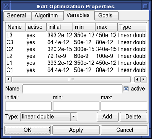
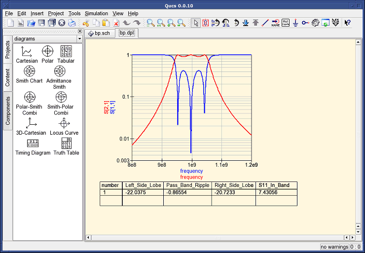

- Qucs -
Simulador de Circuitos Completamente Universal
Começando com
Otimizações
Para otimizar circuitos, Qucs usa a ferramenta ASCO
(http://asco.sourceforge.net/). Uma
breve descrição de como preparar seu esquema elétrico, executar e interpretar os
resultados são dados abaixo. Antes de usar esta funcionalidade, ASCO deve estar instalado
no computador.
Otimização de um circuito não é nada mais do que a minimização da função
custo. Ela poderia ser o atraso no tempo de subida de um circuito digital, ou
a potência ou ganho de um circuito analógico. Outra possibilidade é definindo o
problema de otimização como sendo uma composição de funções, conduzindo neste caso para
a definição de figura-de-mérito.
Para configurar uma netlist para otimização, duas coisas devem ser adicionadas a já
existente netlist: inserir a(s) equação(ões) e o bloco do componente otimização. Tomando
o esquema elétrico da Figura 1 e mudando ele até que que se obtenha o esquema elétrico
exibido na Figura 2.

Figura 1 - Esquema elétrico inicial.

Figura 2 - Esquema elétrico preparado.
Agora, abra o componente otimização e selecione a aba Algorítmo. Dos parâmetros
existentes, dê atenção especial a 'Número máximo de Iterações', 'Constante F' e
'Fator de cruzamento pelo valor'. Pelo valor- ou subestimação pode levar a uma
convergência prematura do otimizador para um mínimo local ou, um tempo muito
longo de otimização.

Figura 3 - Janela de otimização, opção Algorítimo.
Na aba Variáveis, definimos quais elementos do circuito serão escolhidos e suas
faixas de variação, como mostrado na Figura 4. Os nomes das variáveis correspondem aos
local do identificadores nas propriedades e não ao nome dos componentes.

Figura 4 - Janela de otimização, opção Variáveis.
Finalmente, vá para a aba Metas onde os objetivos de otimização (maximizar, minimizar) e
restrições (menor, maior, igual) são definidos. ASCO automaticamente os combinará
em uma única função custo que será minimizada.

Figura 5 - Janela otimização, opção Metas.
O próximo passo é mudar o esquema elétrico, e definir quais elementos do circuito
serão otimizados. O esquema elétrico resultante é mostrado na Figura 6.

Figura 6 - Nova janela principal do Qucs.
O último passo é executar a otimização, isto é, executar a simulação pressionando F2.
Quando finalizado, que demora poucos
segundo em um computador moderno, os melhores resultados da simulação são exibidos em
um visualizador de formas de onda gráfico.

Figura 7 - Janela de resultados do Qucs.
Os melhores valores para o circuito encontrados podem ser encontrados na janela de otimização, na aba Variáveis. Agora eles são os valores iniciais para cada uma das
variáveis introduzidas (Figura 8).

Figura 8 - Os melhores valores encontrados para o circuito.
voltar ao topo